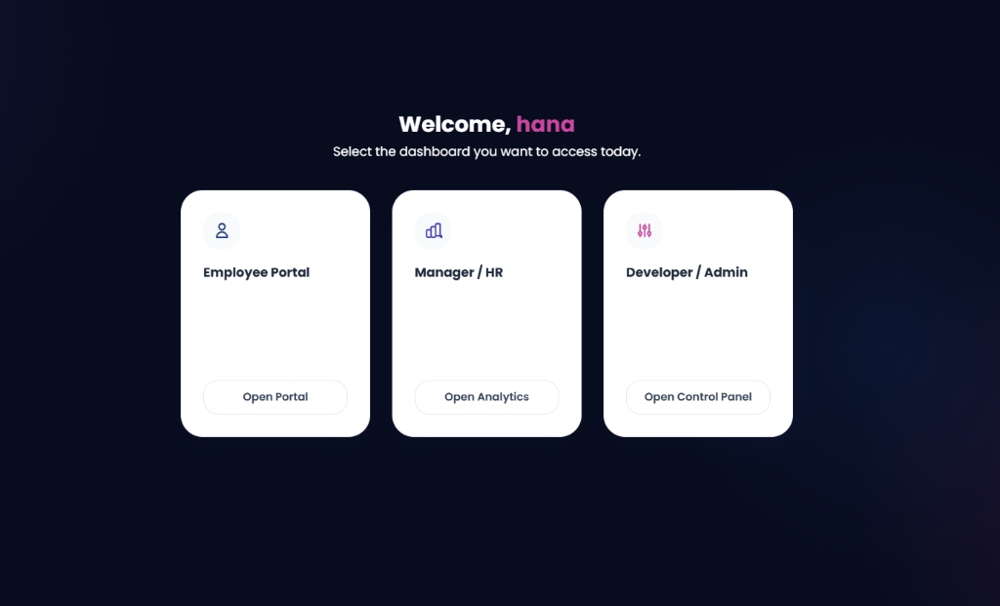

Control Panel
Manager & HR Guide
A reference guide to analyzing employee hours, inspecting Kanban boards, administering leaves, and managing database credentials.
Manual Index
Use the index below to navigate the HR statistics, Kanban monitoring systems, leaves editor, and developer administration parameters.
| 1. |
Dashboard Navigation & Multi-Role Access |
Page 3 |
| 2. |
Attendance Logs & Weekly Hours Chart |
Page 4 |
| 3. |
Monitoring Employee Kanban Boards |
Page 5 |
| 4. |
HR Leaves Tracker (Local Batch-saving) |
Page 6 |
| 5. |
Developer Panel: User Credentials & Database Reset |
Page 7 |
| 6. |
Database Setup & Backend Optimization |
Page 8 |
Database Performance Optimization
The backend Apps Script functions are optimized to read and evaluate sheet availability in a single roundtrip. Always deploy the portal script as a "New Web App Version" to preserve efficiency.
Multi-Role Selection
Managers and developers can access multiple portals depending on their assigned access roles. Authorized accounts (e.g. anurag or hana) are presented with the selector dashboard on login.
Dashboard Entry Options
- Employee Portal: Allows managers to check in and manage their own task lists just like normal employees.
- Manager / HR Portal: Access analytics charts, attendance logs, and leaves tracker.
- Developer / Admin Panel: Modify user lists, update passwords, override URLs, and reset data.
Security & Session Isolation
To avoid session leakage, the portal includes the following security rules:
- Auto-Purge DOM Elements: Switching dashboards or logging out completely wipes out all cached task cards and user details from the DOM.
- Access Guards: Single-role users (e.g. Gopika) can never access the role selection dashboard. The "Switch Dashboard" button is hidden from their view entirely.

Figure 1.1: Branded dashboard selector window
HR Attendance Analytics
The manager interface displays live operational statistics of the workforce. When employees log in or out, their details update dynamically in the spreadsheet backend database.
Live Attendance Indicators
The system displays attendance records categorized with color-coded status badges:
- Active Session (Green): Employees currently logged-in. The session indicator pulses to represent an active workday.
- Offline/Log-out (Slate): Employees who have checked-out. Their logout time and total hours logged are visible.
- Absent (Bordered Slate): Employees who haven't logged any attendance for the selected date.
Weekly Working Hours Chart
At the top of the analytics dashboard, a bar chart summarizes the total working hours accumulated by each employee over the last 7 days. This helps HR detect workload imbalances instantly.

Figure 2.1: HR Dashboard showing live stats, attendance records, and charts
Monitoring Task Progress
Managers can inspect any employee's live task board to review progress, verify task completion, and audit project statuses.
How to inspect a Kanban Board
- Click on the "Employee Kanban Boards" tab on the manager dashboard.
- Use the dropdown menu "Select Employee" to choose the specific worker.
- The interface instantly renders their daily board columns: To Do, In Progress, and Completed.
- Review the task descriptions. Card colors and layouts indicate their respective columns.
Sync Audit Note
If an employee reports that they have completed tasks, but they do not show in the manager's board view, verify that the employee has clicked the blue "Sync Changes" button on their client terminal.

Figure 3.1: Kanban audit workspace for task progress inspection
HR Leaves Tracker
The manager can adjust casual and medical leaves taken per month for each employee. The interface operates locally to prevent annoying load screens on every click.
Leaves Accrual & Carry Forward Rules
- Casual Leaves (CL): Accrue at a rate of 1.0 day per month (accrual started fresh from July 2026). Unused CL is carried forward to subsequent months.
- Medical Leaves (ML): Accrue at a rate of 1.0 day per month. Unused ML is forfeited at month-end and does not carry forward.
How to Modify and Sync Leaves
- Select the target month using the "Select Month" input.
- Locate the target employee. Click the "+" or "-" buttons to adjust taken leaves in half-day increments. The values and remaining balances recalculate instantly in the UI.
- A blue "Save Leave Changes (X)" button will appear, tracking the number of modified records.
- Click the button once you are done making changes. This sends a single batch update to Google Sheets, updating all records instantly!
Figure 4.1: Leaves grid showing buttons, accrued logs, and sync status
Developer & Admin Control Panel
The Developer/Admin Portal provides backend data settings and system control panels. Access is restricted to authorized developer accounts.
Employee Credentials Management
The panel lists all registered employees in the system. You can perform the following modifications:
- Add User: Click "Add User", write a unique username, password, and select access roles.
- Edit User: Edit existing usernames, credentials, and roles. Click "Save User" to sync.
- Delete User: Click the trashcan icon next to any employee to remove their database record.
Database Settings & Reset Operations
- Script URL Configuration: Displays the current Google Apps Script connection. Developers can override this URL if the spreadsheet is migrated.
- Reset Database (Clear Transactional Data): Clicking this button prompts for confirmation, then wipes out all attendance logs, daily task boards, leave records, and daily summaries to start fresh (registered users are preserved).
Caution: Reset Action
Resetting the database is irreversible. Ensure you download a backup copies of the Google Spreadsheet before completing this operation.
Technical Architecture & Deploy
The system is built as a hybrid desktop webview app. The frontend HTML/JS logic is served locally inside PyWebView, proxying requests to Google Sheets.
Spreadsheet Layout Sheets
The Google Spreadsheet contains five critical sheets that the Apps Script backend reads/writes:
| Sheet Name |
Columns |
Description |
| Users |
username, password, role |
Credential and role lists. |
| TimeLogs |
username, date, login_time, logout_time, total_hours |
Daily attendance logs. |
| Tasks |
task_id, username, date, title, status, created_at, updated_at |
Employee Kanban board tasks. |
| DailySummaries |
username, date, summary, created_at |
Work summaries written at checkout. |
| Leaves |
username, month, casual_leaves, medical_leaves |
Monthly leaves records. |
Apps Script Deployment
Ensure that your Apps Script is deployed under Web App configurations with "Execute as Me" and "Access: Anyone" settings. This is mandatory for PyWebView to authenticate proxy calls.